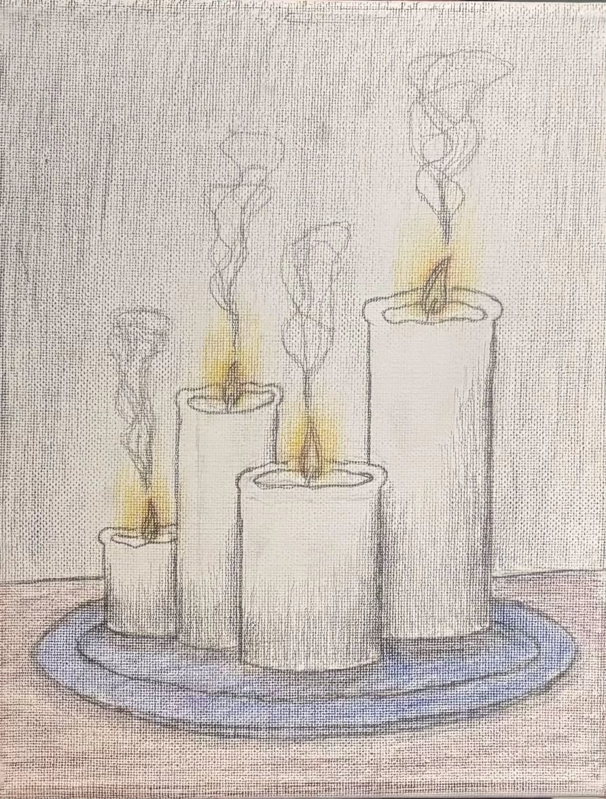
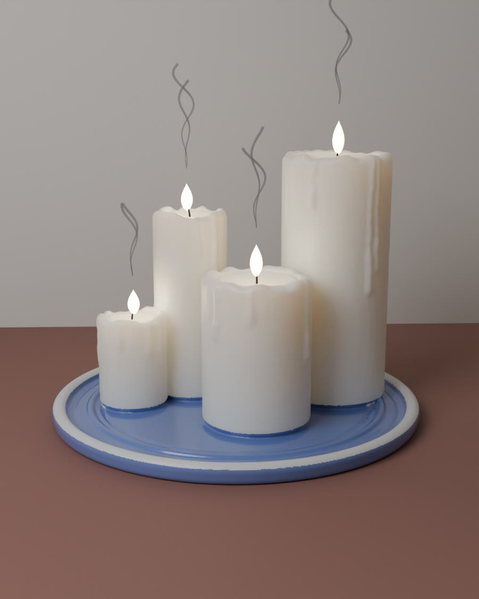

Sam drew this in colored pencil on canvas board: four pillar candles on a blue dish, each with a flame and a curl of smoke. Here it's sculpted in Blender. The heights and spacing come from the drawing, and the melted lips, wax pools and drips are added one brush stroke at a time.
The video below logs every step. Further down, the finished table is live in 3D with the candles lit.


Click any line in the log to jump the video to that stroke.
The finished sculpt, live. The flames flicker and light the wax from inside, and the smoke ribbons drift. Drag to look around, or blow the candles out.
The drawing is in perspective, so each candle's width-to-height ratio was read from it, then set at realistic sizes. The left-to-right order and the overlaps fixed where each candle sits on the dish.
| Candle | Size | Drips |
|---|
The blockout uses the same distance-field method as the gecko:
Marching cubes turns it into one mesh with 250k vertices.
Around each rim, 22 dabs either Draw, so the wax swells, or Grab downward, so it slumps where it has melted. Flatten levels the liquid pool, Crease sharpens where the pool meets the wall, and a deep crease drills the wick hole.
Each candle gets two to four drips. A thin Draw stroke follows a slightly wandering path down the wall from a low point on the lip, then a fatter dab makes the bead where the run stopped. The drips are on the side facing you, where your drawing shows the wax.
Your drawing shades the candles with vertical hatching. In the sculpt that becomes very faint vertical streaks pressed into the wax, a tenth of a millimetre deep, and you only see them when light rakes across. Two grooves are cut between the dish rims.
The wax material lets light glow through it. The dish has a glossy blue glaze, and the table is a pinkish wood like yours.